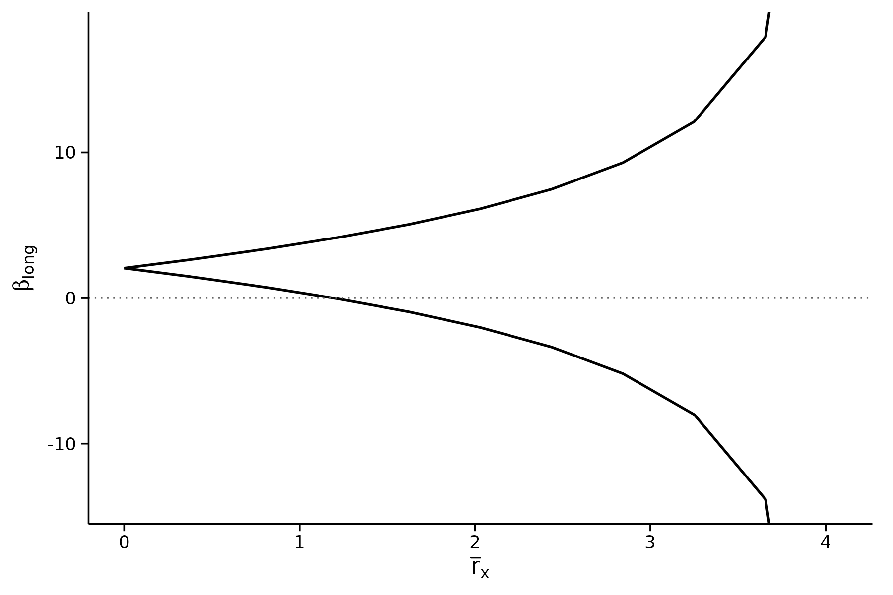
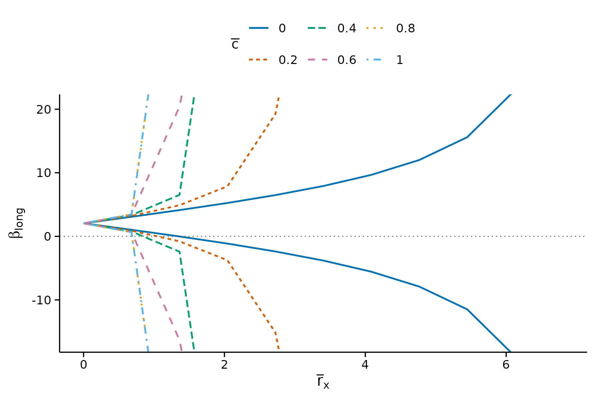
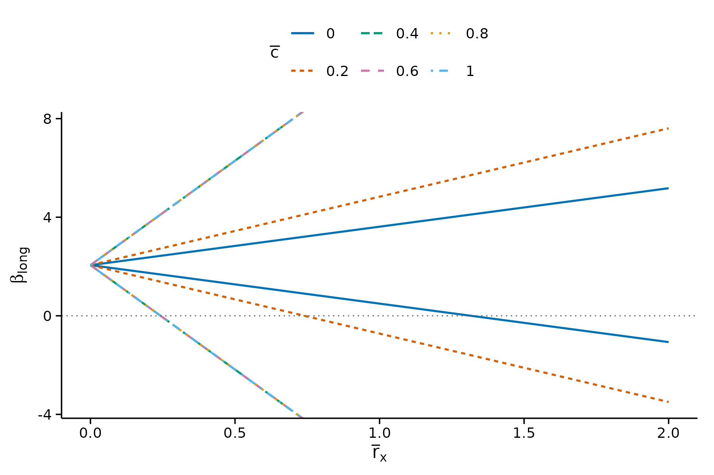
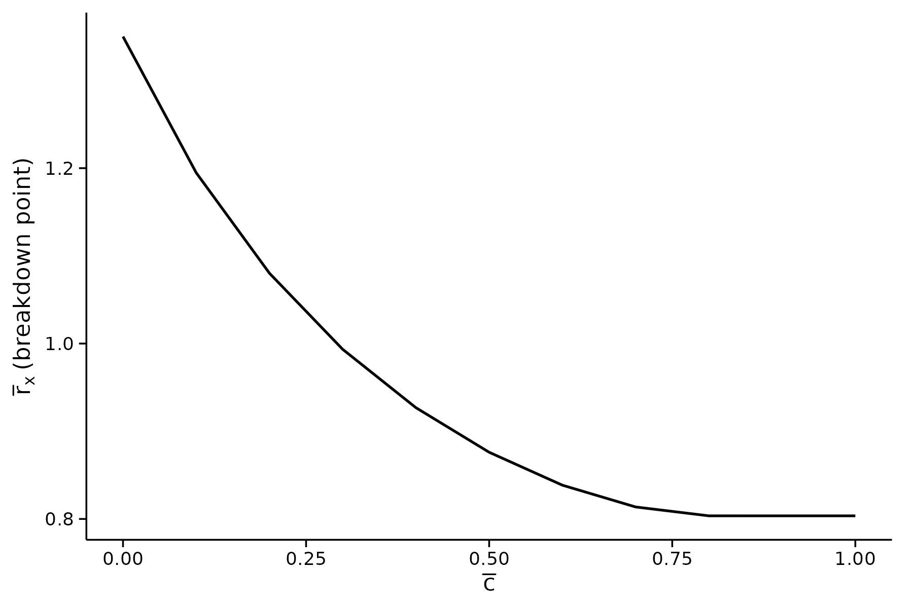
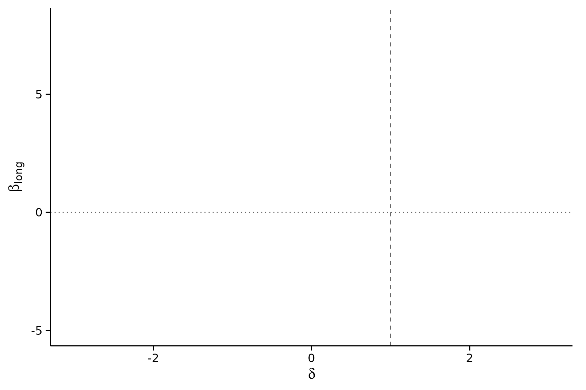
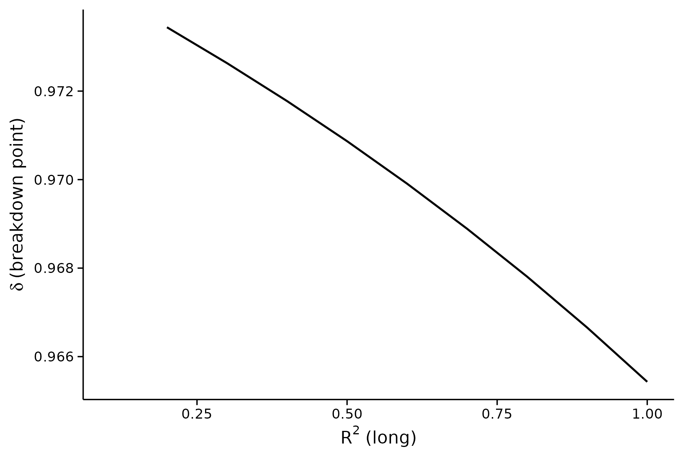

The reference implementation of these methods is Masten and Poirier’s
Stata package, also called regsensitivity. This vignette
maps its syntax onto this package, command by command, using the same
BFG (2020) data that the Stata vignette uses.
It doubles as a coverage check. Every command in the Stata package’s
own vignette (shipped here as
inst/stata-reference/vignette.do) appears below with its R
equivalent, so a gap would be visible rather than implicit.
data(bfg2020)
bfg2020$statea <- factor(bfg2020$statea)
w1 <- c("log_area_2010", "lat", "lon", "temp_mean", "rain_mean",
"elev_mean", "d_coa", "d_riv", "d_lak", "ave_gyi")
form <- avgrep2000to2016 ~ tye_tfe890_500kNI_100_l6 +
log_area_2010 + lat + lon + temp_mean + rain_mean + elev_mean +
d_coa + d_riv + d_lak + ave_gyi + stateaIn Stata the outcome, treatment and controls are positional and the comparison set is named separately:
local y avgrep2000to2016
local x tye_tfe890_500kNI_100_l6
local w1 log_area_2010 lat lon temp_mean rain_mean elev_mean d_coa d_riv d_lak ave_gyi
local w0 i.statea
regsensitivity `y' `x' `w1' `w0', compare(`w1')In R the same information is a formula plus compare. The
first term on the right-hand side is the treatment; everything else is a
control.
Command map
| Stata | R |
|---|---|
regsensitivity y x w, compare(w1) |
regsen_summary(form, data, compare = w1) |
regsensitivity bounds ... |
regsen_bounds(form, data, ...) |
regsensitivity breakdown ... |
regsen_breakdown(form, data, ...) |
regsensitivity plot |
plot(result) |
compare(w1) |
compare = w1 |
nocompare |
nocompare = TRUE |
cbar(0(.2)1) |
cbar = seq(0, 1, 0.2) |
rxbar(0 2) |
rxbar = c(0, 2) |
rybar(2) |
rybar = 2 |
rybar(=rxbar) |
rybar_expr = function(rx) rx |
beta(0 eq) |
beta = bnd_eq(0) |
beta(4 ub) |
beta = bnd_ub(4) |
beta(-1(.2)1 lb) |
beta = bnd_lb(seq(-1, 1, 0.2)) |
beta(sign) |
beta = "sign" (the default) |
oster |
analysis = "oster" |
delta(-3 3 eq) |
delta = c(-3, 3), delta_type = "eq"
|
delta(0(.001).999 bound) |
delta = seq(0, .999, .001),
delta_type = "bound"
|
rmax(0(.1)1) |
r2long = seq(0, 1, 0.1) |
plot, nolegend |
plot(res, show_legend = FALSE) |
plot, yrange(0 6) |
plot(res, ylim = c(0, 6)) |
plot, ywidth(4) |
plot(res, ywidth = 4) |
plot, xline(1) |
plot(res, xline = 1) |
e(idset_table) |
as.data.frame(res) |
cluster(v) on the regression |
regsen_boot(..., cluster = "v") |
Two differences are worth flagging rather than burying in the table.
Stata’s numlist syntax 0(.2)1 means “from 0
to 1 in steps of .2”, which is seq(0, 1, 0.2). And Stata
stores results in e() matrices retrieved with matrix
subscripts; here the results are already a data frame, so
as.data.frame(res) gives you the same content directly.
The Stata vignette, translated
Default summary
summ <- regsen_summary(form, bfg2020, compare = w1)
summ
#>
#> === DMP (2026) bounds ===
#>
#> Regression Sensitivity Analysis ----- Bounds
#> ------------------------------------------------------------------------
#> Analysis: DMP (2026)
#> Treatment: tye_tfe890_500kNI_100_l6
#> Outcome: avgrep2000to2016
#> N (obs): 2036
#> Hypothesis: Beta > 0
#> Breakdown point: 0.8036
#>
#> --- Summary statistics ----------------------------------
#> Beta (short) 1.9246
#> Beta (medium) 2.0548
#> R2 (short) 0.0328
#> R2 (medium) 0.1051
#> Var(Y) 101.7387
#> Var(X) 0.9014
#> Var(X_Residual) 0.8823
#>
#> --- Results ---------------------------------------------
#> rxbar rybar cbar bmin bmax
#> 0 +Inf 1 2.0548 2.0548
#> 0.098939 +Inf 1 1.9064 2.2031
#> 0.19788 +Inf 1 1.7535 2.356
#> 0.29682 +Inf 1 1.5906 2.5189
#> 0.39576 +Inf 1 1.4106 2.6989
#> 0.49469 +Inf 1 1.2026 2.9069
#> 0.59363 +Inf 1 0.94779 3.1617
#> 0.69257 +Inf 1 0.60803 3.5015
#> 0.79151 +Inf 1 0.086812 4.0227
#> 0.89045 +Inf 1 -0.99272 5.1022
#> 0.98939 +Inf 1 -Inf +Inf
#>
#> === Oster (2019) breakdown ===
#>
#> Regression Sensitivity Analysis ----- Breakdown Frontier
#> ------------------------------------------------------------------------
#> Analysis: Oster (2019)
#> Treatment: tye_tfe890_500kNI_100_l6
#> Outcome: avgrep2000to2016
#> N (obs): 2036
#> Hypothesis: Beta > 0
#>
#> --- Summary statistics ----------------------------------
#> Beta (short) 1.9246
#> Beta (medium) 2.0548
#> R2 (short) 0.0328
#> R2 (medium) 0.1051
#> Var(Y) 101.7387
#> Var(X) 0.9014
#> Var(X_Residual) 0.8823
#>
#> --- Results ---------------------------------------------
#> index breakdown
#> 0.13667 0.97393
#> 0.23667 0.97315
#> 0.33667 0.97232
#> 0.43667 0.97145
#> 0.53667 0.97052
#> 0.63667 0.96954
#> 0.73667 0.9685
#> 0.83667 0.96739
#> 0.93667 0.96622
#> 1 0.96543Bounds at a single cbar
b1 <- regsen_bounds(form, bfg2020, compare = w1, cbar = 0.1)
plot(b1)
Bounds over a grid of cbar
b2 <- regsen_bounds(form, bfg2020, compare = w1,
cbar = seq(0, 1, 0.2))
plot(b2)
Restricting rxbar as well
b3 <- regsen_bounds(form, bfg2020, compare = w1,
cbar = seq(0, 1, 0.2), rxbar = c(0, 2))
plot(b3)
Breakdown frontier
bd <- regsen_breakdown(form, bfg2020, compare = w1,
cbar = seq(0, 1, 0.1))
plot(bd)
Breakdown for a one-sided hypothesis
bd_ub <- regsen_breakdown(form, bfg2020, compare = w1,
cbar = seq(0, 1, 0.1), beta = bnd_ub(4))
bd_ub
#>
#> Regression Sensitivity Analysis ----- Breakdown Frontier
#> ------------------------------------------------------------------------
#> Analysis: DMP (2026)
#> Treatment: tye_tfe890_500kNI_100_l6
#> Outcome: avgrep2000to2016
#> N (obs): 2036
#> Hypothesis: Beta < 4
#>
#> --- Summary statistics ----------------------------------
#> Beta (short) 1.9246
#> Beta (medium) 2.0548
#> R2 (short) 0.0328
#> R2 (medium) 0.1051
#> Var(Y) 101.7387
#> Var(X) 0.9014
#> Var(X_Residual) 0.8823
#>
#> --- Results ---------------------------------------------
#> index breakdown
#> 0 1.2807
#> 0.1 1.1404
#> 0.2 1.0362
#> 0.3 0.95706
#> 0.4 0.89635
#> 0.5 0.85018
#> 0.6 0.81655
#> 0.7 0.79515
#> 0.8 0.78819
#> 0.9 0.78819
#> 1 0.78819Bounding the unobservable’s effect on the outcome
regsensitivity bounds `y' `x' `w', compare(`w1') rybar(2)
regsensitivity bounds `y' `x' `w', compare(`w1') rybar(=rxbar)
b_ry <- regsen_bounds(form, bfg2020, compare = w1, rybar = 2)
b_eq <- regsen_bounds(form, bfg2020, compare = w1,
rybar_expr = function(rx) rx)
b_eq$breakdown
#> [1] 0.9583522Oster (2019)
regsensitivity bounds `y' `x' `w', compare(`w1') oster
regsensitivity bounds `y' `x' `w', compare(`w1') oster delta(-3 3 eq) plot
regsensitivity plot, xline(1)xline() marks a reference value on the x-axis; here it
is
,
the point past which the assumed long-regression fit would exceed a
perfect one.
os <- regsen_bounds(form, bfg2020, compare = w1,
analysis = "oster",
delta = c(-3, 3), delta_type = "eq")
plot(os, ylim = c(-5, 8), xline = 1)
#> `geom_line()`: Each group consists of only one observation.
#> ℹ Do you need to adjust the group aesthetic?
Oster breakdown over rmax
regsensitivity breakdown `y' `x' `w', compare(`w1') oster rmax(0(.1)1) beta(0 eq)
regsensitivity breakdown `y' `x' `w', compare(`w1') oster rmax(0(.1)1) beta(sign)
os_bd <- regsen_breakdown(form, bfg2020, compare = w1,
analysis = "oster",
r2long = seq(0, 1, 0.1),
beta = bnd_eq(0))
os_sign <- regsen_breakdown(form, bfg2020, compare = w1,
analysis = "oster",
r2long = seq(0, 1, 0.1),
beta = "sign")
plot(os_sign)
Coverage
Every option exercised by the Stata vignette has an equivalent above.
The one behaviour that is not carried over is Stata’s habit of
leaving results in e() for the next command to pick up:
regsensitivity plot with no arguments replots whatever ran
last. Here each function returns its result and plot()
takes it explicitly, which is what lets you keep several analyses side
by side in one session.
#> R version 4.6.1 (2026-06-24)
#> Platform: x86_64-pc-linux-gnu
#> Running under: Ubuntu 24.04.4 LTS
#>
#> Matrix products: default
#> BLAS: /usr/lib/x86_64-linux-gnu/openblas-pthread/libblas.so.3
#> LAPACK: /usr/lib/x86_64-linux-gnu/openblas-pthread/libopenblasp-r0.3.26.so; LAPACK version 3.12.0
#>
#> locale:
#> [1] LC_CTYPE=C.UTF-8 LC_NUMERIC=C LC_TIME=C.UTF-8
#> [4] LC_COLLATE=C.UTF-8 LC_MONETARY=C.UTF-8 LC_MESSAGES=C.UTF-8
#> [7] LC_PAPER=C.UTF-8 LC_NAME=C LC_ADDRESS=C
#> [10] LC_TELEPHONE=C LC_MEASUREMENT=C.UTF-8 LC_IDENTIFICATION=C
#>
#> time zone: UTC
#> tzcode source: system (glibc)
#>
#> attached base packages:
#> [1] stats graphics grDevices utils datasets methods base
#>
#> other attached packages:
#> [1] ggplot2_4.0.3 regsensitivity_0.1.2
#>
#> loaded via a namespace (and not attached):
#> [1] vctrs_0.7.3 cli_3.6.6 knitr_1.51 rlang_1.3.0
#> [5] xfun_0.60 otel_0.2.0 generics_0.1.4 S7_0.2.2
#> [9] textshaping_1.0.5 jsonlite_2.0.0 labeling_0.4.3 glue_1.8.1
#> [13] htmltools_0.5.9 ragg_1.5.2 sass_0.4.10 scales_1.4.0
#> [17] rmarkdown_2.31 grid_4.6.1 evaluate_1.0.5 jquerylib_0.1.4
#> [21] fastmap_1.2.0 yaml_2.3.12 lifecycle_1.0.5 compiler_4.6.1
#> [25] RColorBrewer_1.1-3 fs_2.1.0 farver_2.1.2 systemfonts_1.3.2
#> [29] digest_0.6.39 nloptr_2.2.1 R6_2.6.1 bslib_0.12.0
#> [33] withr_3.0.3 tools_4.6.1 gtable_0.3.6 pkgdown_2.2.1
#> [37] cachem_1.1.0 desc_1.4.3